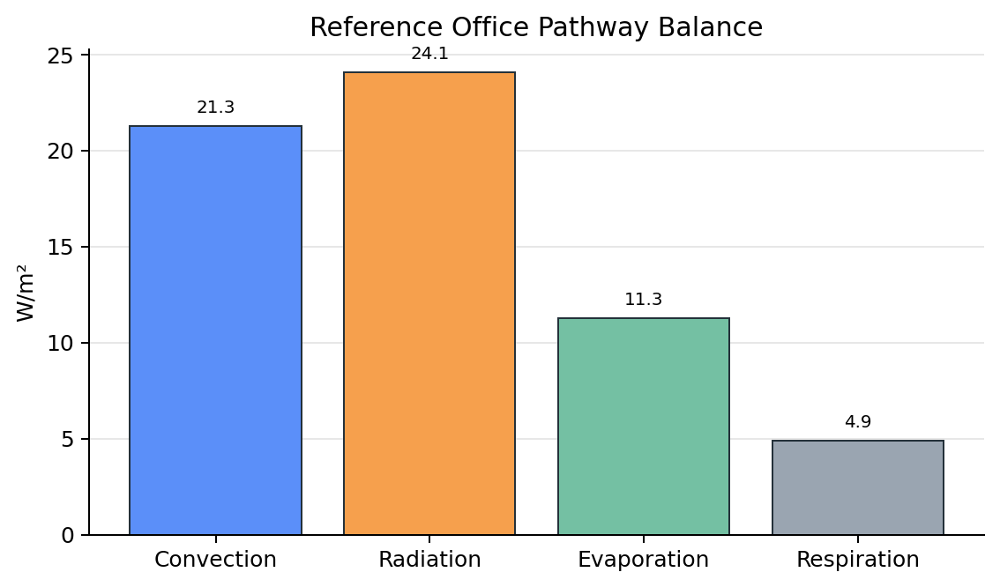
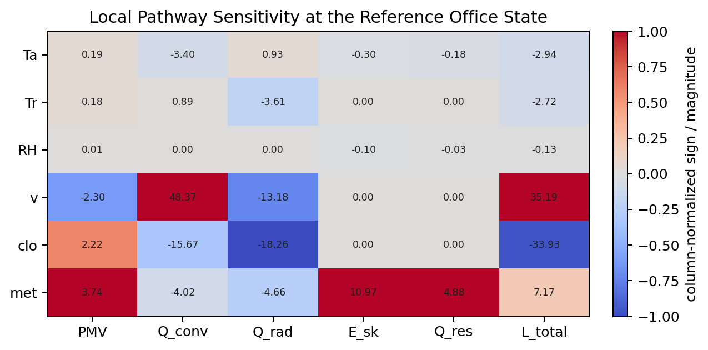

This is a deliberately stripped mechanism study built on the existing comfort engine. The question is whether a Watts-first paper core emerges once the problem is reduced to one office occupant, a few canonical discomfort states, and single-lever recoveries judged by PMV acceptability.
Ta=25.5 C, Tr=25.5 C, RH=50%, v=0.10 m/s, met=1.00, clo=0.50
| PMV | -0.22 |
|---|---|
| PPD | 6.0% |
| Convective loss | 21.28 W/m² |
| Radiative loss | 24.07 W/m² |
| Evaporative loss | 11.28 W/m² |
| Respiratory loss | 4.88 W/m² |
At this reference office state, the interesting question is not just whether PMV is neutral, but which pathway is already carrying the larger share of the occupant heat balance.


Values below are centered finite-difference gradients at the reference state. They tell us which variable perturbs which heat-transfer channel most strongly, before any scenario logic is added.
| Variable | Step | Unit | dPMV | dQ_conv | dQ_rad | dE_sk | dQ_res |
|---|---|---|---|---|---|---|---|
| Ta | 0.5 | C | 0.192 | -3.403 | 0.935 | -0.295 | -0.177 |
| Tr | 0.5 | C | 0.178 | 0.887 | -3.612 | 0.000 | 0.000 |
| RH | 5.0 | % | 0.009 | 0.000 | 0.000 | -0.099 | -0.032 |
| v | 0.05 | m/s | -2.300 | 48.370 | -13.176 | 0.000 | 0.000 |
| clo | 0.05 | clo | 2.217 | -15.672 | -18.260 | 0.000 | 0.000 |
| met | 0.1 | met | 3.735 | -4.023 | -4.665 | 10.972 | 4.882 |
| Scenario | Ta | Tr | RH | v | PMV | PPD | Largest baseline pathway |
|---|---|---|---|---|---|---|---|
| Whole room too cold | 21.5 | 21.5 | 50 | 0.10 | -1.71 | 62.4 | radiation |
| Cold-radiant skew | 25.5 | 21.5 | 50 | 0.10 | -0.92 | 22.8 | radiation |
| Draft / elevated air movement | 26.0 | 26.0 | 50 | 0.75 | -1.04 | 27.7 | convection |
| Mild warm bulk | 28.0 | 28.0 | 50 | 0.10 | 0.72 | 15.8 | radiation |
| Warm humid still air | 28.5 | 28.5 | 70 | 0.05 | 1.19 | 35.0 | radiation |
These are deliberately minimal. Each row asks whether one control variable alone can return the state to |PMV| ≤ 0.5 within bounded search ranges, and which heat-transfer pathway changes the most in the successful recovery.
Bulk cool proxy: air and radiant temperature both reduced.
Ta=21.5 C, Tr=21.5 C, RH=50%, v=0.10 m/s, PMV=-1.71
| Lever | Feasible | Minimum control move | PMV recovery | Dominant recovery channel |
|---|---|---|---|---|
| All-air (Ta only) | yes | +6.20 C | -1.71 → -0.49 | convection |
| Radiant (Tr only) | yes | +7.30 C | -1.71 → -0.49 | radiation |
| Airflow control (v only) | no | — | -1.71 → — | — |
| Latent control (RH only) | no | — | -1.71 → — | — |
Whole-body MRT proxy for a cold-wall condition; not a local asymmetry model.
Ta=25.5 C, Tr=21.5 C, RH=50%, v=0.10 m/s, PMV=-0.92
| Lever | Feasible | Minimum control move | PMV recovery | Dominant recovery channel |
|---|---|---|---|---|
| All-air (Ta only) | yes | +2.20 C | -0.92 → -0.49 | convection |
| Radiant (Tr only) | yes | +2.50 C | -0.92 → -0.49 | radiation |
| Airflow control (v only) | no | — | -0.92 → — | — |
| Latent control (RH only) | no | — | -0.92 → — | — |
Cool-side discomfort induced by elevated air speed.
Ta=26.0 C, Tr=26.0 C, RH=50%, v=0.75 m/s, PMV=-1.04
| Lever | Feasible | Minimum control move | PMV recovery | Dominant recovery channel |
|---|---|---|---|---|
| All-air (Ta only) | yes | +1.50 C | -1.04 → -0.49 | convection |
| Radiant (Tr only) | yes | +4.00 C | -1.04 → -0.49 | radiation |
| Airflow control (v only) | yes | -0.47 m/s | -1.04 → -0.49 | convection |
| Latent control (RH only) | no | — | -1.04 → — | — |
Uniform warm-bulk state where multiple levers may recover similar PMV.
Ta=28.0 C, Tr=28.0 C, RH=50%, v=0.10 m/s, PMV=0.72
| Lever | Feasible | Minimum control move | PMV recovery | Dominant recovery channel |
|---|---|---|---|---|
| All-air (Ta only) | yes | -1.20 C | 0.72 → 0.48 | convection |
| Radiant (Tr only) | yes | -1.20 C | 0.72 → 0.50 | radiation |
| Airflow control (v only) | yes | +0.10 m/s | 0.72 → 0.49 | convection |
| Latent control (RH only) | yes | -22.00 % | 0.72 → 0.50 | evaporation |
Warm-humid state with low air movement and evaporative constraint.
Ta=28.5 C, Tr=28.5 C, RH=70%, v=0.05 m/s, PMV=1.19
| Lever | Feasible | Minimum control move | PMV recovery | Dominant recovery channel |
|---|---|---|---|---|
| All-air (Ta only) | yes | -3.20 C | 1.19 → 0.48 | convection |
| Radiant (Tr only) | yes | -3.90 C | 1.19 → 0.50 | radiation |
| Airflow control (v only) | yes | +0.57 m/s | 1.19 → 0.50 | convection |
| Latent control (RH only) | no | — | 1.19 → — | — |